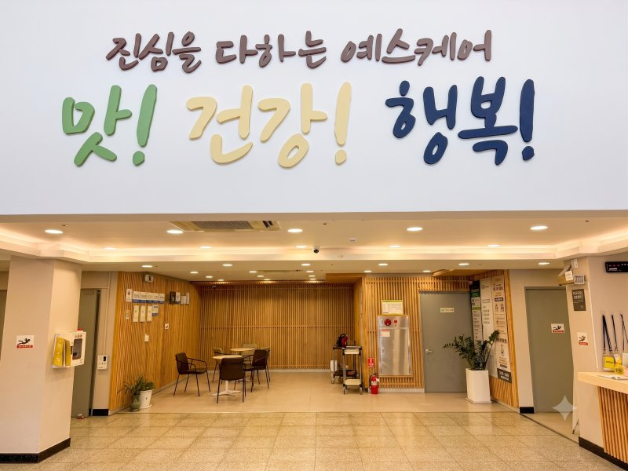
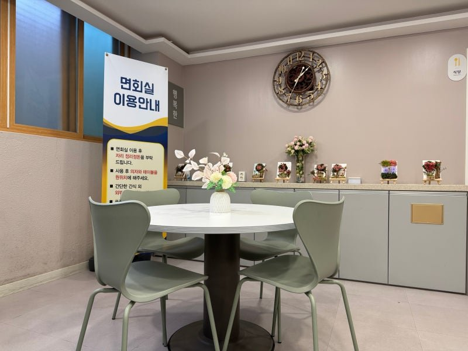

건강과 간호 돌봄
건강 상태와 복용 중인 약을 입소 상담에서 함께 확인합니다.
건강과 돌봄 소식LIFE AT YESCARE
보고 싶은 공간의 사진을 선택하면 확대됩니다.

방문 시 처음 들어오는 안내 공간
창가 침대와 개인 수납공간

가족과 만나 이야기를 나누는 공간
상서동 예스케어 건물과 입구
돌봄 분야별로 실제 일상과 프로그램 소식을 살펴보세요.
건강 상태와 복용 중인 약을 입소 상담에서 함께 확인합니다.
건강과 돌봄 소식어르신의 생활을 돕고 함께 참여할 수 있는 여가 활동을 운영합니다.
행복한 일상 이야기움직임을 돕는 활동과 인지·작업 프로그램의 사례를 볼 수 있습니다.
재활·작업치료 소식요양원에서 제공하는 주간 식사와 간식을 식단표에서 확인할 수 있습니다.
주간 식단표